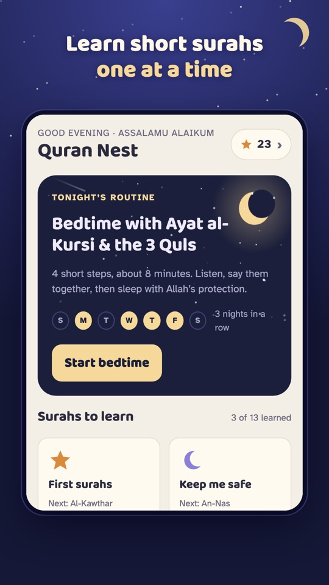
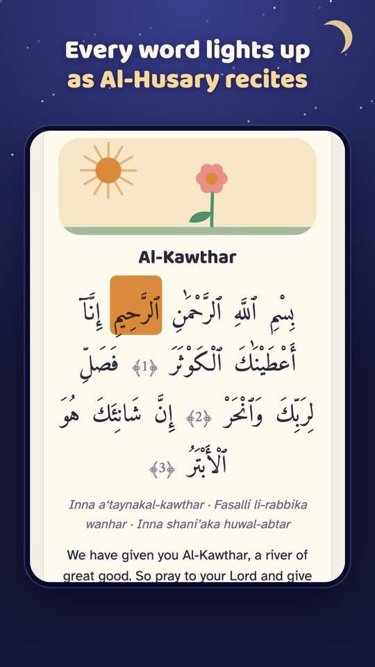
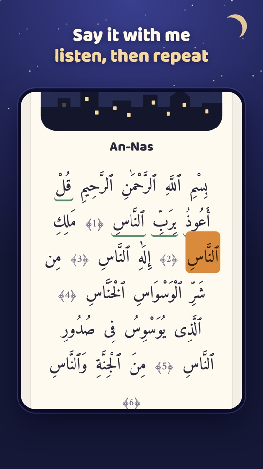
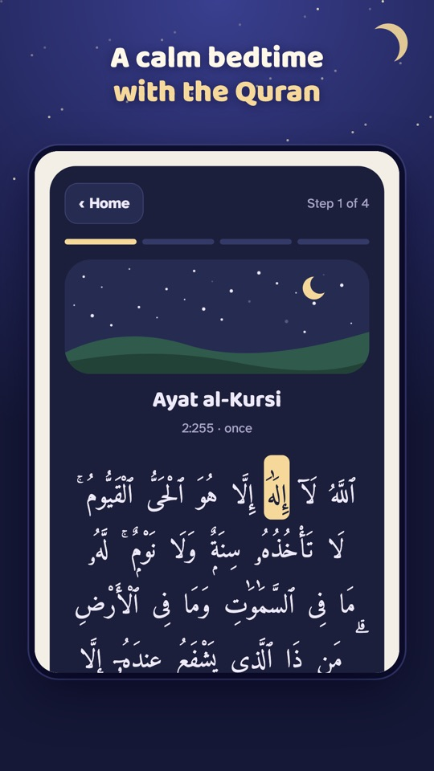

Quran Nest
Support · formerly Dua Nest
Short surahs and a calm bedtime routine for children: Al-Fatiha, Ayat al-Kursi and 11 short surahs of Juz ‘Amma, recited slowly by Shaykh Mahmoud Khalil al-Husary in his teaching style, with each word lighting up as he reads. A "Say it with me" mode leaves time to repeat every verse. Stars, a sticker-book collection and 11 languages. No ads, no music, free.




Contact
Questions or ideas: support@calmappslab.com. We usually reply within two working days.
Common questions
Where does the recitation come from? The recitation of Shaykh al-Husary (Muallim) is provided by Quran.com and Quran Foundation. The Quran text is from Tanzil.net, unchanged. The meanings shown are simple explanations for children, not a translation of the Quran.
Does it need the internet? The recitation plays over the internet. To use the app without internet, open "For parents" and turn on "Save recitation on this phone" (about 11 MB).
How do I change the language? The app follows the phone's language. A parent can choose another one in "For parents".
Is there advertising? No, never.
How do I reset my child's progress? Open "For parents" on the home screen, answer the grown-ups question, then tap "Reset progress".
Privacy
The app collects no personal data. Read the privacy policy.